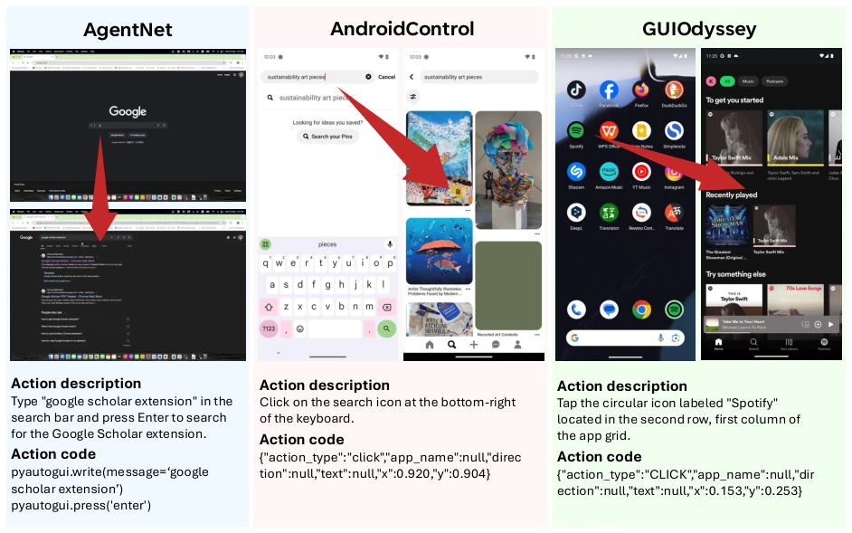
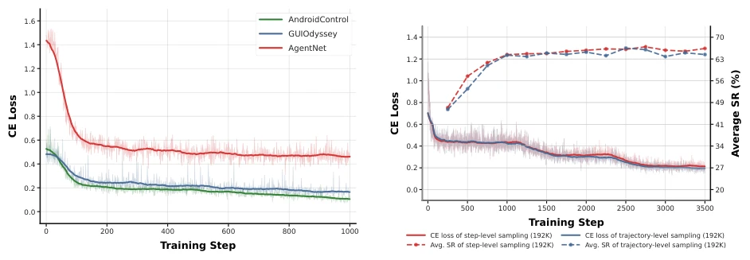
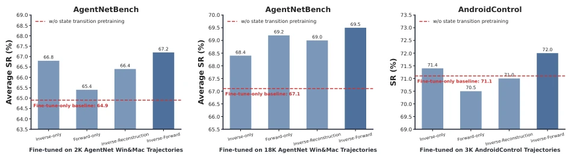
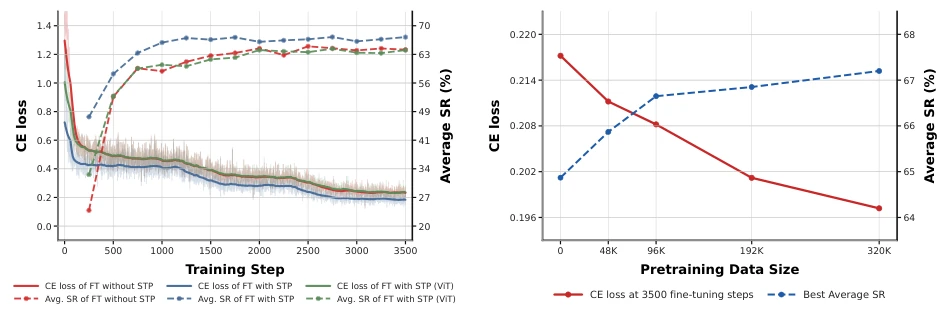

GUI Agent 训练主要靠 RL 或轨迹微调。RL 需要复杂环境，工程量大 (Ye et al., 2025; Lu et al., 2025b)。轨迹微调虽主流，但多步轨迹标注贵 (Lu et al., 2025c; Wang et al., 2025c)。且直接微调把视觉定位、动态建模、任务规划全耦合在一个目标里，优化难、数据效率低 (Cheng et al., 2024)。现有方法缺乏对 GUI 动态的显式建模。STP 旨在解耦这些能力，利用廉价的步级状态转换数据，提供更好初始化，作为轨迹微调的补充 Scaling 轴，降低对高质量指令数据的依赖，解决数据稀缺和耦合优化难题。
—

Figure 2: Examples of visual state transition data from three GUI control sources: AgentNet, AndroidControl, and GUIOdyssey. Each example consists of a transition tuple (st, at, st+1), where st and st+1 are two consecutive screenshots and at is the action executed between them. These transitions provide step-level supervision for STP without requiring task-level instruction annotations.
Figure 3: Illustration of inverse and forward dynamics in STP. Forward dynamics models the transition (st, at) →st+1 by predicting the next state given the current state and action. Inverse dynamics models (st, st+1) →at by inferring the action that caused the transition.
Figure 1: State Transition Pretraining (STP) improves both the training optimization and downstream performance of GUI agents. Left: Cross-entropy loss on AgentNet (training) and average success rate on AgentNetBench (evaluation) across fine-tuning steps. Both models are fine-tuned on the exact same 2K AgentNet Win&Mac trajectories. Right: Final performance across multiple benchmarks under different trajectory settings. Each subplot corresponds to a distinct training setup, and reports results under identical fine-tuning configurations with and without STP. Models are trained and evaluated on the corresponding dataset for each benchmark. The y-axis represents average success rate (%) for AgentNetBench, and step success rate (%) for AndroidControl and GUIOdyssey. These results demonstrate t

Figure 4: Training dynamics under different STP conditions. Left: Cross-entropy loss during fine-tuning across the three datasets used in our experiments; mobile datasets (AndroidControl, GUIOdyssey) converge substantially faster than the desktop dataset (AgentNet), indicating lower task complexity and less headroom for STP to fill. Right: Trajectory-level vs. step-level transition sampling for STP under a shared 192K- transition budget (fine-tuning on 2K trajectories); the two strategies yield comparable training dynamics and downstream performance.

Figure 5: Ablation on pretraining objectives. We compare inverse-only, forward-only, inverse+forward, and inverse+reconstruction pretraining across different fine-tuning settings. Results are reported as average success rate on AgentNetBench and step accuracy on AndroidControl. Each bar corresponds to a pretraining objective, and the red dashed line indicates the fine-tune-only baseline without state transition pretraining.

Figure 6: Ablation on visual understanding encoder tuning and pretraining scale. The left plot compares different pretraining strategies, including no STP, full-model STP, and STP with only the visual understanding encoder (ViT in BAGEL) being updated, with Cross-Entropy (CE) loss and average SR tracked over training steps. The right plot compares different pretraining data sizes, reporting CE loss after 3500 fine-tuning steps and the best average SR achieved under each setting.